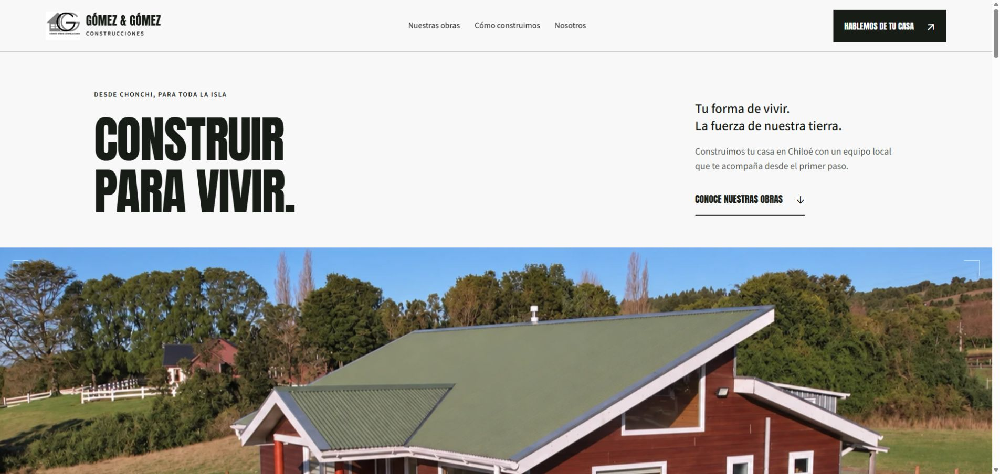
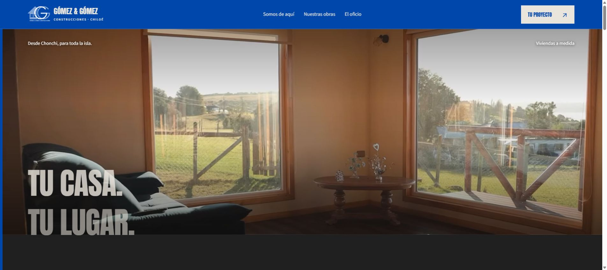

V1 / ORIGINAL CONSERVADA

Predominio de fondos claros, acentos verdes, fotografía estática y presentación de la empresa avanzada la página.
La versión original se conserva en el archivo local del proyecto.
V2 / COBALTO

Navbar cobalto, vídeo a pantalla completa, presentación fusionada en segundo lugar, obras grandes sobre grafito y secuencia de construcción.
ABRIR V2 ↗